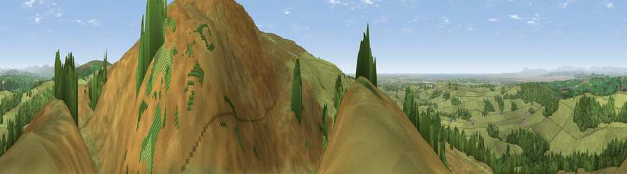

Viewpoint near Quernmore
#3372 in England · top 10% of its area beats it · near QuernmoreWhere it is
The exact computed spot (SD 53525 60575). Click the marker for map links.
The view, rendered

A 360° render of this exact spot computed from the terrain model, tree cover and land cover — summer colours, afternoon light, calibrated against photographs of famous viewpoints. Real trees, hedges and buildings will differ in detail.
The panorama
Grey silhouette: terrain skyline in each direction (720 bearings, Earth curvature and refraction included). Dashed green: skyline with trees (+15 m) and buildings (+8 m) as obstacles. Blue strip: how far the ground is visible on each bearing.
Where the view opens
Wedge length = distance to the farthest visible ground on that bearing (vegetation-aware). Rings at 10, 25 and 50 km.
What fills the view
85% grassland · 12% woodland · 2% water ·
Angular shares of the visible panorama (visual magnitude), not map area. Landscape diversity 0.22 (0–1 Shannon).
Key numbers
More beautiful places nearby
The staircase of upgrades: each row has a higher view potential than everything closer. Driving times are estimates from straight-line distance, calibrated against real road routing — check an actual route before setting out.
| Place | Direction | Drive | Score |
|---|---|---|---|
| Viewpoint near Quernmore | ESE · 0 km | ~1 min | 77.7 |
| Viewpoint near Quernmore | SE · 1 km | ~4 min | 78.0 |
| Viewpoint near Scorton | S · 12 km | ~23 min | 79.9 |
| Warton Crag | NNW · 13 km | ~24 min | 83.2 |
| Viewpoint near Grange-over-Sands | NW · 23 km | ~37 min | 83.4 |
| Viewpoint near Cartmel | NW · 26 km | ~42 min | 87.0 |
| Viewpoint near Cartmel | NW · 26 km | ~42 min | 87.2 |
| Viewpoint near Finsthwaite | NNW · 31 km | ~49 min | 90.3 |
54.03905, -2.71115 · source: screening · position refined by local search. Computed location — check access rights before visiting.